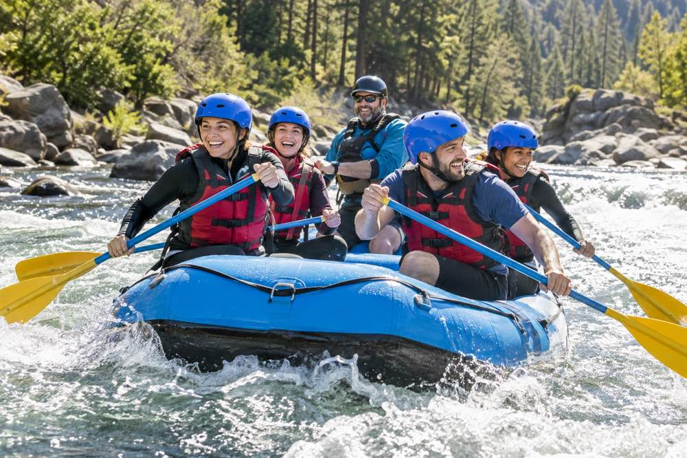
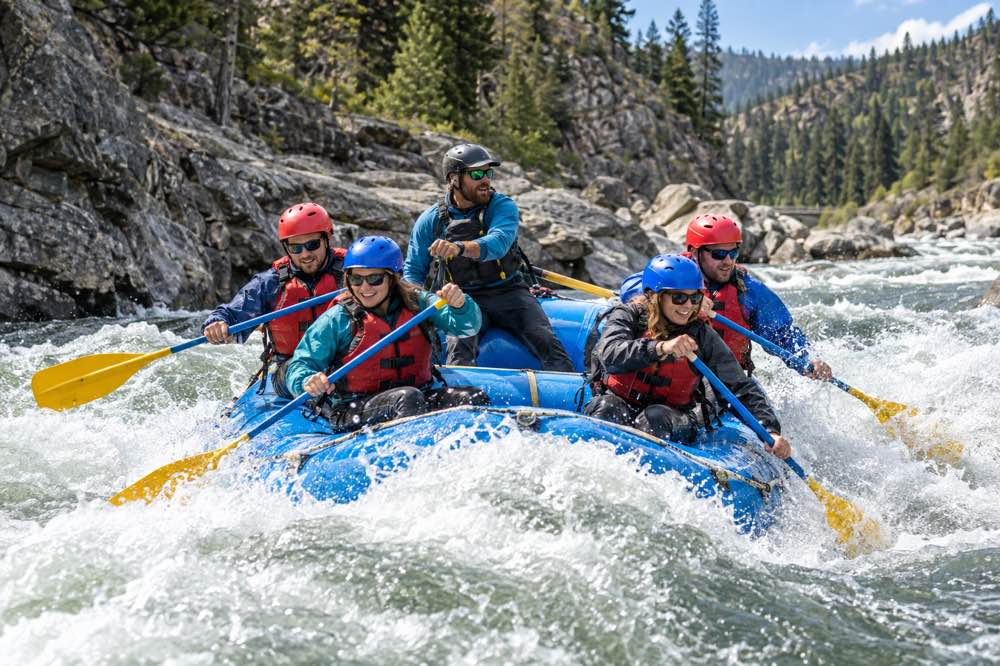
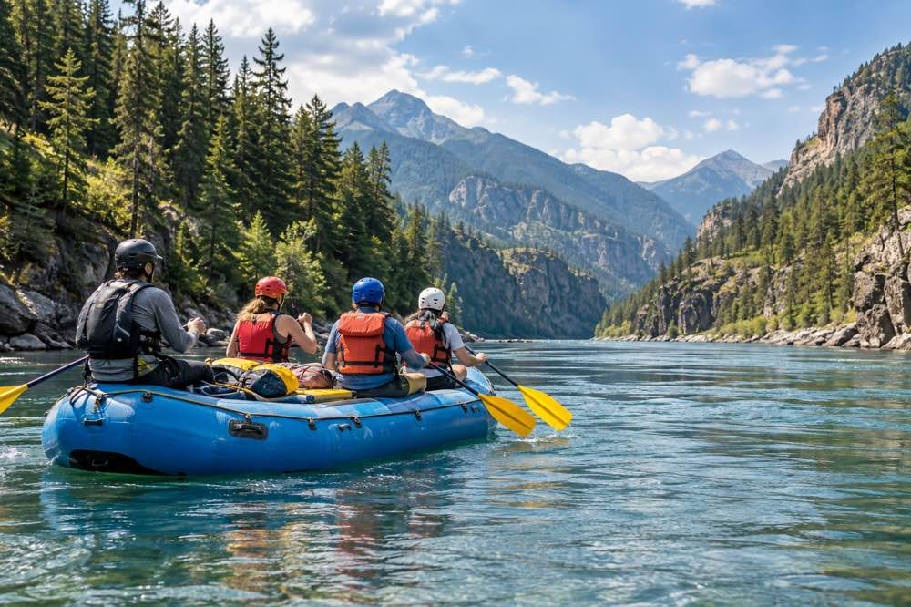

Half-Day Adventure
Try rafting with a guide by your side. This trip pairs lively splashes with calmer stretches, giving your group time to learn the basics and enjoy the river scenery.
Good for: First-time rafters, families, and groups.
From a first taste of white water to a longer day on the river, our guided trips bring people together for excitement, teamwork, and time outdoors. Every outing includes an experienced guide and a safety briefing before we launch.

Try rafting with a guide by your side. This trip pairs lively splashes with calmer stretches, giving your group time to learn the basics and enjoy the river scenery.
Good for: First-time rafters, families, and groups.

Make it a team effort on a spirited ride through exciting rapids. Listen to your guide, paddle together, and take in the changing views along the river.
Good for: Friends and groups looking for an active outing.

Spend more time outdoors on a longer guided journey. Enjoy a changing mix of white water, quiet river stretches, and scenic views along the way.
Good for: Adventurers who want a fuller day on the river.
| Trip | Experience | Recommended for | Included |
|---|---|---|---|
| Half-Day Adventure | A guided introduction with lively splashes and calmer stretches. | First-time rafters, families, and groups. | Guide, raft, paddles, life jacket, and safety briefing. |
| Big Mallard | An active run through exciting rapids that rewards teamwork. | Friends and groups looking for an energetic outing. | Guide, raft, paddles, life jacket, and safety briefing. |
| River Expedition | A longer journey through white water and quiet scenic stretches. | Adventurers who want a fuller day on the river. | Guide, raft, paddles, life jacket, and safety briefing. |
We provide the essential rafting equipment and guidance for your trip:
Wear clothes that can get wet and secure footwear. Contact us before your trip if you have questions about what to bring or which adventure is right for your group.
Tell us about your group, and we can help you choose a river adventure.
Contact Us